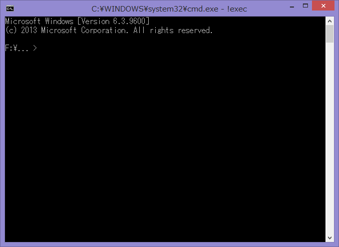

CamphorScript入門
CamphorScriptを学ぼう
1. CamphorScriptの使い方
1-1. 使い方
まず、「メモ帳」を起動し、以下のように打ち込んで下さい。
大文字と小文字、全角と半角は区別されます。全て半角で入力して下さい。
char a = 'H', b = 'e', c ='l', d = 'o'; write(a); write(b); write(c); write(c); write(d); |
「ファイル」から「名前を付けて保存」を選択し、「ファイルの種類」を「すべてのファイル」にした後、ファイル名をHello.cphsとして保存して下さい。

次に、同封の!exec.batというファイルを開いて下さい。

表示された画面にccsc -run "と打ち込んだ後、 先ほど作成したHello.cphsを!exec.batにドラッグ&ドロップし、 その後に"と打ち込んで下さい。

Enterキーを押すと、Helloと表示されます。
何らかのエラーが発生した場合は、上記のプログラムの写し間違いである可能性があるので、直して再実行して下さい。
ちゃんとHelloと表示された場合は、おめでとうございます、初めてのCamphorScriptプログラムの完成です！
- Debian系の場合は、ターミナルを開き、sudo apt-get install haskell-platformを実行。
そうでなければ、何らかの方法で Haskell Platformをインストール。 - 同封のフォルダを適切な場所にコピー
- ターミナルを開き、今コピーしたccsc.hsのあるディレクトリにcd
- ghc --make ccsc -o ccsc && chmod 755 ccscを実行
- ./ccscを実行し、エラーが出ないことを確認する
-
テキストエディタを起動し、以下のように打ち込む
(大文字と小文字、全角と半角は区別されます。全て半角で入力して下さい。)char a = 'H', b = 'e', c ='l', d = 'o'; write(a); write(b); write(c); write(c); write(d);
- Hello.cphsという名前で保存する
- ./ccsc -run "先ほど作成したHello.cphsの絶対パス"を実行
- Helloと出力されていれば成功！
1-2. 基本
前回作成したプログラムは、Helloと出力するだけのプログラムです。
char a = 'H', b = 'e', c ='l', d = 'o'; write(a); write(b); write(c); write(c); write(d); |
先に進む前に、このプログラムを詳しく見ていきましょう。
まず1行目では、aやbなどの変数と言うものを宣言しています。 変数とは、データを格納しておくための入れ物です。
1行目では、宣言と同時にそこに'H'などのデータを格納しています。（「初期化」と呼ぶ）
それ以降の行では、writeと言うものを使って、変数の中のデータを出力しています。 また、出力した後も変数の中にデータは残るので、 cに'l'が入っている時に write(c); write(c);と書けば、llと出力されるわけです。
「なぜわざわざ変数なんか作るんだろう」と思うかもしれませんが、今のところは「そういうものだ」と思っていて下さい。
では、基本的な仕組みが分かったところで、出力する中身を変えていきましょう。ということで、前回作ったHello.cphsを開きましょう。
「メモ帳」を開き、「ファイル」から「開く」を選択し、「テキスト文書」となっているところを「すべてのファイル」に変更し、前回作ったHello.cphsを選択し、開いて下さい。
お好みのテキストエディタをお使い下さい。
ファイルが開けたところで、プログラムを書き換え、実行してみましょう。
char a = '2', b = '+', c = '3', d = '=', e = '5'; write(a); write(b); write(c); write(d); write(e); |
これまでのプログラムを見て分かるように、一つ一つの命令（「文」と呼ぶ）は 原則としてセミコロン（;）で終わります。
また、空白や改行は自由に入れることが出来ます。例えば、
char a = '2', b = '+', c = '3', d = '=', e = '5'; |
と
char a = '2' ,b = '+',c = '3', d = '=',e ='5' ; |
は全く同じものとして扱われます。 ただ、後者のような書き方をすると非常に読みにくくなるので、このような書き方はお薦めしません。
例外的に、charをch arと書いたり、 char aをcharaと書いたりすることは出来ず、 また'と'の間に余分な空白や改行は置けません。
2. CamphorScriptの基本
2-1. 入力
プログラムは、実行中にデータを受け取ることができます。次のプログラムを見てください。
char a = '@', b = '>', c = ' ', d = ':'; write(b);write(c); read(a); write(d);write(a);write(a); |
実行すると、> と出力され、一旦プログラムが停止します。キーボードから文字を入力して下さい。
入力が終わるとプログラムが再開します。このプログラムの場合、:が出力された後、入力された文字が2回出力されます。
なお、以下、このプログラムの実行結果をこのように表します。赤い文字は実際には表示されないのでご注意を。
さて、それではプログラムを詳しく見ていきましょう。
1行目の宣言は今までと同様です。2行目では、> を出力しています。
3行目では、readと言うものを使って、変数の中にあるデータを入力から受け取った文字で上書きしています。
4行目では、:を出力した後に、入力した文字を2回出力しています。
前回のプログラムでは、aを'@'で初期化していますが、結局使っていません。
それもそのはず、3行目でreadを使ってaの中身を上書きしているので、 '@'は消えてしまいます。
消えてしまうのならば、そもそも初期化を省略してしまっても問題ないはずです。ということで、消してみましょう。
char a, b = '>', c = ' ', d = ':'; write(b);write(c); read(a); write(d);write(a);write(a); |
動いています。省略しても問題ないみたいですね。
このように、変数宣言時の初期化は省略することができます。
2-2. 文字コード
今までのプログラムでは、文字を扱ってきました。では、CamphorScriptでは、文字をどのように扱っているのでしょうか。
CamphorScriptに限らず、一般的にコンピュータでは、文字に番号を割り振り、その数値で文字を管理します。この番号のことを「文字コード」と呼びます。 文字コードの種類は多くありますが、CamphorScriptでは「ASCIIコード」と言うものを使います。
CamphorScriptでは、文字と文字コードは完全に同じものとして扱われます。 例えば、文字「a」には文字コード「97」が割り振られているので、 char a = 'a'; write(a);とchar a = 97; write(a);は完全に同じ動作をします。
|
|
|
|
|
|
|
|
|
|
|
|
文字が数で表せるということは、文字で計算ができていいはずです。次のプログラムを見てください。
char a, b = ':'; read(a); write(b); a-=1; write(a); a+=2; write(a); |
1行目の宣言は前回と同様です。次の行でreadするのでaの初期化は省略しています。
2行目で入力を受け取り、aに格納しています。3行目は:の出力です。
4行目では、-=と言うものを使ってaから1を引いています。5行目ではその結果を出力しています。
6行目では、+=と言うものを使ってaに2を足しています。7行目ではその結果を出力しています。
このように、+=と-=を使って足し算と引き算ができます。
実は、変数を大きい数で初期化する処理は効率があまり良くありません。足し算と引き算を上手く使うことで、プログラムの効率を上げることができます。
例えば、以下の2つのプログラムは共にxyzと出力しますが、前者では3つの変数をそれぞれ120,121,122という大きな数で初期化しているのに対して、後者は120での初期化1回で済んでいるので、後者のほうが格段に効率が良くなっています。
char a = 'x', b = 'y', c = 'z'; write(a); write(b); write(c); |
char a = 'x';write(a); a += 1; write(a); a += 1; write(a); |
3. 流れを変えろ！
今までのプログラムは、単に上から順番に命令を実行するだけでした。しかし、CamphorScriptではそれ以上のこともできるのです。
3-1. while文
CamphorScriptでは、同じ処理を繰り返し実行することができます。次のプログラムを見て下さい。
char a = 5, b = '*';
while(a)
{
write(b);
a -= 1;
}
|
1行目はいつもの宣言&初期化です。なお、数で初期化していることに注意してください。
2行目では、whileと言うものを使っています。 これは、「変数の中のデータが0でない限り、次に続く{と}の間の処理を繰り返す」という意味です。
{と}の間では、*を出力してaから1を引いています。
ちなみに、while(a)の後に;を付けてはいけません。間違えやすいので、気をつけましょう。
さて、ではこのプログラムがどう動くのか、見ていきましょう。重要なのは、「aが0でない限り繰り返す」ということです。
- aの値は5。*を出力してaから1を引く。
- aの値は4。*を出力してaから1を引く。
- aの値は3。*を出力してaから1を引く。
- aの値は2。*を出力してaから1を引く。
- aの値は1。*を出力してaから1を引く。
- aの値は0。よってここで繰り返しが止まる。
と、このようにして、*****と出力されたわけです。
また、while(a)が終了した直後のaの中身は0であることもわかると思います。 当たり前に見えるかもしれませんが、後々重要になってきます。
前回のプログラムでは、繰り返し（「ループ」と言います）の中でaの中身を減らしていました。 おかげで、5回繰り返した後にaが0になって、無事ループから抜け出すことができました。
では、aの中身を減らさなかったらどうなるのでしょう。
char a = 5, b = '*';
while(a)
{
write(b);
}
|
おっと、出力が止まらなくなってしまいました。aは永久に0になれないのですから、当然ですね。
このような状態を「無限ループ」と呼びます。 意図的に発生させることもありますが、うっかりミスでこういう状況になってしまうこともよくあるので気をつけましょう。
なお、無限ループしたプログラムを強制的に止めるには、Ctrlキーを押しながらCを押してください。
3-2. 関数(1)
前回書いた、「文字を一定回数出力する処理」が気に入って、頻繁に使いたくなったとします。しかし、毎回whileを書くのは面倒です。何とかして楽に書けないものでしょうか。
「関数」と言うものを使うと、頻繁に使う処理に名前を付けて保存することができます。早速、例を見てみましょう。
void repeat5(char& p)
{
char q = 5;
while(q){write(p); q -= 1;}
delete q;
}
char a = '*'; repeat5(a);
char b = '+'; repeat5(b);
|
見たことのないものが沢山ありますね。では、解説です。
1行目～6行目では、repeat5という関数を定義しています。詳しく見ていきましょう。
1行目では、
- 関数の名前はrepeat5
- 受け取るもの（「引数」と言います）はcharで宣言された変数
- その変数を関数内ではpという名前で参照する
ということを宣言しています。
3行目と4行目は、この前のプログラムと同様です。
さて、5行目では、deleteと言うものを使って、宣言した変数を削除しています。
関数内で宣言した変数は、必ずdeleteしなくてはいけません。deleteしないとエラーが発生します。
そして、これは最も重要な事ですが、中身が0でない変数を絶対にdeleteしてはいけません。
今回の場合は、whileの実行が終わってqの中身が0になっているので、deleteできるわけです。
間違ってdeleteしてしまってもエラーは一切出ないので、十分に注意して下さい。
8行目、9行目では、aやbを宣言&初期化し、repeat5に渡しています。これを、「repeat5を呼び出す」と言います。
関数を呼び出すと、まるで関数の先頭にジャンプし、受け取った引数を使って処理が行われていくかのように動作します。
最後に達したら、関数が呼び出された場所の直後に戻り、（「呼び出し元に戻る」と言います）そのまま次に進んでいきます。
わざわざ「まるで～かのように」と書いているのには勿論理由があるのですが、それは後ほど説明します。
3-3. 関数(2)
前回書いた関数では、繰り返しの回数を指定することができませんでした。
ということで、引数を2つ渡し、回数を指定できるようにしましょう。
void repeat(char& p, constant char Q)
{
char q = 0; q += Q;
while(q){write(p); q -= 1;}
delete q;
}
char a = '*'; repeat(a,3);
char b = '+'; repeat(b,10);
|
1行目では、
- 関数の名前はrepeat
- 1つ目の引数は、charで宣言された変数
- その変数を関数内ではpという名前で参照する
- 2つ目の引数は、char関連の定数
- その定数を関数内ではQという名前で参照する
と宣言しています。
ちなみに、定数を参照する場合は大文字を使い、「これは定数だ」と分かりやすくするのがお薦めです。
後は3行目の5をQに変えるだけ、のはずなのですが、諸事情によりchar q = Q;とは書けません。
+=は使えるので、面倒でもchar q = 0; q += Q;と書いて下さい。
あとは、呼び出しの時に渡す引数を増やすだけです。
3-4. 関数(3)
前回までに作った関数では、出力する文字を指定するためにはわざわざ変数を渡す必要がありました。
効率化のためにはこの方がいいのですが、せっかくなので定数も渡せるようにしてみましょう。
void repeat(char& p, constant char Q)
{
char q = 0; q += Q;
while(q){write(p); q -= 1;}
delete q;
}
void repeat2(constant char P, constant char Q)
{
char p = 0; p += P;
repeat(p,Q);
p -= P; delete p;
}
char a = '*'; repeat(a,3);
char b = '+'; repeat(b,10);
repeat2('e',7);
|
repeatを定義しているところと、使っているところは前回と同様です。ということで、repeat2を見ていきましょう。
repeat2の宣言の先頭では、恒例のごとく関数名と引数を宣言しています。
その後、受け取ったPをchar p = 0; p += P;でpに渡し、 そのpを使ってrepeat(p,Q);を呼んでいます。
このように、関数の中で別の関数を呼び出すことで、わざわざ同じような処理を書き直さずに済むわけです。
それが終わったら、p -= P;でpの中身を0にしてから、deleteしています。
そろそろ忘れてきている頃だと思いますが、deleteする直前に変数の中身を0にするのは義務です。絶対に忘れないようにしてください。
さて、前回新しく作った関数はrepeat2という名前でしたが、repeatとの違いといえば、定数を受け取るか変数を受け取るかという点だけです。中で行っている処理にこそ微妙な差はありますが、呼び出す側からすれば殆ど同じです。
それなのに、「変数で呼び出すときはrepeat、定数で呼び出すときはrepeat2」と覚えておくのは面倒です。どちらもrepeatで呼び出せるようにできないでしょうか。
早速試してみましょう。取りあえず、前回repeat2と書いていたところをrepeatに書き換えてみましょう。
void repeat(char& p, constant char Q)
{
char q = 0; q += Q;
while(q){write(p); q -= 1;}
delete q;
}
void repeat(constant char P, constant char Q)
{
char p = 0; p += P;
repeat(p,Q);
p -= P; delete p;
}
char a = '*'; repeat(a,3);
char b = '+'; repeat(b,10);
repeat('e',7);
|
おや、問題なく動いているようですね。
このように、引数の条件が異なっていれば、同じ名前で複数回関数を定義することができます。これを、「関数オーバーロード」と言います。
3-5. 関数(4)
前回定義したrepeatを使って、「文字を一定回数出力し、直後に改行を出力する」という関数を書いてみましょう。
はて、改行の出力はどうやって行えばいいんでしょうね？
void repeat(char& p, constant char Q)
{
char q = 0; q += Q;
while(q){write(p); q -= 1;}
delete q;
}
void repeat(constant char P, constant char Q)
{
char p = 0; p += P;
repeat(p,Q);
p -= P; delete p;
}
void repeatLine(char& p, constant char Q)
{
repeat(p,Q);
char r = 10; write(r); r -= 10; delete r;
}
void repeatLine(constant char P, constant char Q)
{
repeat(P,Q);
char r = 10; write(r); r -= 10; delete r;
}
char a = '*'; repeatLine(a,3);
char b = '+'; repeatLine(b,10);
repeatLine('e',7);
|
++++++++++
eeeeeee
結論から言うと、改行を表す文字の文字コードが10なので、10が入った変数をwriteすれば改行できます。
ということで、2つのrepeatLineでは、それぞれ対応するrepeatを呼んだ後に、改行文字を出力しています。
しかし、よく見てみると、関数の中身はほぼ同一です。どうにかしてまとめて書けないものでしょうか。
void repeat(char& p, constant char Q)
{
char q = 0; q += Q;
while(q){write(p); q -= 1;}
delete q;
}
void repeat(constant char P, constant char Q)
{
char p = 0; p += P;
repeat(p,Q);
p -= P; delete p;
}
void repeatLine(const char p, constant char Q)
{
repeat(p,Q);
char r = 10; write(r); r -= 10; delete r;
}
char a = '*'; repeatLine(a,3);
char b = '+'; repeatLine(b,10);
repeatLine('e',7);
|
++++++++++
eeeeeee
動いていますね。
引数のところにconst charという指定があります。これを使うと、constant charとchar&を統一的に扱うことができます。
4. 不思議な不思議な演算子
4-1. 演算子(1)
突然ですが、入力から2つの文字を受け取って、その文字コードを足してできる文字を出力するプログラムを書いてみましょう。
さて、足し算ってどうやって書けばいいんでしょうか。+=でいいんでしょうか。
早速試してみましょう。
char a, b; read(a); read(b); a += b; write(a); |
no type-matching instance of operator "+=" defined
おっと、エラーが出てしまいました。どうやら、右に変数があるときには+=が使えないみたいです。どうしましょう。
ここで、発想を転換してみましょう。
「bを足す」ことができないなら、「『1を足す』という処理をb回繰り返す」ようにすればいいのです。
「b回繰り返す」ならwhileで書けますね。書き直しましょう。
char a, b;
read(a); read(b);
while(b)
{
a += 1; b -= 1;
}
write(a);
|
今度は動きました。 '#'(35) + '!'(33) = 'D'(68) 、 'B'(66) + '+'(43) = 'm'(109) 、 '%'(37) + ','(44) = 'Q'(81) なので、 計算も合っていますね。
さて、今書いた足し算の処理はシンプルですが、頻繁に使いそうなので名前を付けましょう。
bの値が移動(move)してaに足される(add)ので、関数名はmove_addにしてみます。
void move_add(char& to, char& from)
{
while(from)
{
to += 1; from -= 1;
}
}
char a, b;
read(a); read(b);
move_add(a,b);
write(a);
|
動いています。
しかし、「似たような処理を行っているのに、定数なら+=、変数ならmove_addを使う」というのは不便です。まとめられないでしょうか。
要するに、右が変数であっても使える+=を自分で作って定義すればいいのです。
でも、+=は関数ではありません。（「演算子」と言います。）どうすればいいのか、早速見てみましょう。
void (+=)(char& to; char& from)
{
while(from)
{
to += 1; from -= 1;
}
}
char a, b;
read(a); read(b);
a += b;
write(a);
|
奇妙なものが沢山ありますが、とにかく動いています。
関数名の代わりに、演算子の名前+=をカッコに入れたものをvoidの後に書いています。
引数を区切る,の代わりに、演算子が実際に入る場所である1つめと2つめの引数の間に;を入れています。
これだけで、自分で定義した+=が使えるようになります。
しかし、何故このような奇妙な宣言をするのでしょうか。実は、この宣言方法には深い意味があります。
実は、演算子を呼び出すときには、この宣言の構文と同様に呼び出すこともできるのです。
char a; read(a); (-=)(a;1); write(a); |
…微妙な見た目ですね。読みやすくもありません。
ただ、この形式で書くと、「演算子と関数は見た目が違うだけで、本質的には同じものである」ということは理解しやすいと思います。
4-2. 演算子(2)
前回、+=を定義しましたが、新しい+=を使うと、右の変数の値が0になってしまいます。
内部でwhileを使っているから当然といえば当然なのですが、元の+=とは使い勝手が違うことになります。
使い勝手が違うものなら、見た目も変えるべきです。ということで、演算子の名前を取りあえず+=~とかに変えてみましょう。
void (+=~)(char& to; char& from)
{
while(from)
{
to += 1; from -= 1;
}
}
char a, b;
read(a); read(b);
a +=~ b;
write(a);
|
cannot define operator "+=~" because its fixity is not defined
あれ、うまく行きませんね。
実は、演算子を新たに宣言するときには、その優先順位と結合性を定義しなくてはいけません。優先順位と結合性とは、例えば1+2×3は1+(2×3)であって(1+2)×3ではない、ということを定める規則です。
ということで結合性宣言を足しましょう。
infixr 5 (+=~);
void (+=~)(char& to; char& from)
{
while(from)
{
to += 1; from -= 1;
}
}
char a, b;
read(a); read(b);
a +=~ b;
write(a);
|
これで動くようになりました！
さて、謎のinfixr 5 (+=~);を見てみましょう。ここでは、
- +=~は右結合である。
- +=~の優先順位は5である。
と宣言しています。+=や-=のような、「左側の変数の中身を変更する」演算子はinfixr 5で宣言することを推奨します。
なお、CamphorScriptでは、演算子の間であれば、a +=~ b;をa += ~b;のように、 空白を入れることができます。
こう書くと、まるで~というのが「後ろの変数の中身を吸い出し、0にする」という独立した演算子のように見えて、プログラムが理解しやすくなります。
さて、宣言したのはいいのですが、前回のプログラムでは、この宣言を一切活用していません。
それもそのはず、1つの文の中で1つの演算子しか使っていないので、優先順位も結合性も関係がないわけです。
ということで、複数の演算子を使ってみましょう。
infixl 35 (+);
void (+=)(char& to; constant char A + constant char B)
{
to += A;
to += B;
}
char a = 0;
a += '!' + '#';
write(a);
|
さて、では前回出てきたa += '!' + '#';を詳しく見ていきましょう。
まず、この文の中には2つの演算子があります。+=と+です。
+=はinfixr 5 (+=);、 +はinfixl 35 (+);なので、 +の方が高い優先順位を持ちます。
よって、a += '!' + '#';はa += ('!' + '#');として解釈されます。
そして、先ほど説明したように、a += ('!' + '#');は(+=)(a ; '!' + '#');と同一です。
この形は、見た目が違うだけで、実質plus_equal(a, '!', '#');のような関数呼び出しと同じようなものです。
ここから、CamphorScriptの呼び出し処理における重要な2つの事実が見えてきます。
- 演算子と関数の違いは見た目だけ(前節で説明)
- 引数の区切りには,以外も使える
5. 構文拡張
CamphorScriptにある機能のうち、 readやwriteのような見た目のものは「関数」として、 +=や-=のような見た目のものは「演算子」として、自分で後から追加できることが分かりました。 では、whileのような見た目のものは、果たして追加できるのでしょうか？
5-1. 複雑なプログラムを書く
入力された文字の文字コードが50より大きいかどうかを判断するプログラムを考えましょう。さて、どうやって書けばいいでしょうか。
「変数の中に入っている値で流れを変える」ということをする（「条件分岐する」と言います）には、 whileを使うしかありません。
whileには「0か0でないか」という区別しかできないので、よく考える必要があります。
処理の内容は、「入力された数から50を引き、残った数が0より大きいかどうかを判断する」とも言えます。
ただ、whileは「0かどうかを判断する」のであって、「0より大きいかどうかを判断する」ことはできません。
要するに、負の数だとうまく扱えません。ということは、負にならないように、「0になったらそれ以上は引かない」とすればいいのです。
つまり、「1を引くけど、既に0だったらこれ以上引かない」という処理を50回繰り返し、 その後で、「残った数が0かどうか」を調べればいいわけです。
処理を書きたいのですが、その前に、後で使うことになるので、「コピー元を消去せずに変数を足し合わせる」という演算子を作っておきましょう。
void (+=)(char& to; char& from)
{
char c2 = 0;
while(from){ to += 1; c2 += 1; from -= 1;}
while(c2){ from += 1; c2 -= 1;}
delete c2;
}
|
3行目では、fromを消去しながらtoとc2にfromを複製しています。
その次では、c2を消去しながら元の値をfromに復元しています。
次に、「1を引くけど、既に0だったら引かない」という処理を書きます。せっかくなので関数にしましょう。
void subtract1(char& v)
{
char c = 0; c += v;
while(c)
{
while(c){c -= 1;}
v -= 1;
}
delete c;
}
|
3行目でvの値をcにコピーし、そのcをwhileに通します。
c（つまりv）が0であれば、whileの中身は飛ばされるので、 中に書いてあるa -= 1;は実行されません。
c（つまりv）が0でなければ、whileの中に入ります。
whileの中には、別のwhileがあります。この内側のwhileでは、cを0にしています。
その後、v -= 1;が実行され、外側のループの終わりに辿り着いたため、cが0かどうかが判断されます。
しかし、当然ながら、cは先ほど0にされたので、外側のwhileから抜け出すことができます。
最後に、0であることが確認されたcをdeleteして終了です。
…とまあ、なかなか複雑な考察の末に、望みの「1を引くけど、既に0だったら引かない」という処理が完成しました。
さて、ここまで書けてしまえば後は楽なものです。
入力を受け取り、先ほどの処理を50回ループさせ…
char a; read(a);
char num = 50;
while(num)
{
subtract1(a);
num -= 1;
}
|
aの残りが0より大きかったらbigと出力するだけです。
char b = 'b';
while(a)
{
while(a){a -= 1;}
write(b);
b += 7; write(b);
b -= 2; write(b);
}
|
ここでも、先ほどのように、whileの中でwhileを使い、ループから抜けだしています。
以上を全て合わせ、プログラムの完成です！
void (+=)(char& to; char& from)
{
char c2 = 0;
while(from){ to += 1; c2 += 1; from -= 1;}
while(c2){ from += 1; c2 -= 1;}
delete c2;
}
void subtract1(char& v)
{
char c = 0; c += v;
while(c)
{
while(c){c -= 1;}
v -= 1;
}
delete c;
}
char a; read(a);
char num = 50;
while(num)
{
subtract1(a);
num -= 1;
}
char b = 'b';
while(a)
{
while(a){a -= 1;}
write(b);
b += 7; write(b);
b -= 2; write(b);
}
|
きちんと動きました！
5-2. 構文を拡張する
whileは便利です。CamphorScriptでプログラムを書くとなると、様々な用途にwhileを使うことになります。
今までも、文字を繰り返し出力したり、変数と変数を足しあわせたり、whileは大活躍してきました。
しかし、whileは余りにも便利なので、後でプログラムを読み直しwhileを見るたびに、「このwhileはどういう意図で使っているのか」と考える必要が出てきます。
それを考えずに済むように、今まで関数や演算子を定義し、処理の意図を分かりやすくしてきた、と言えるわけです。
さて、前回のプログラムでは、「変数の値が0であったら、～を実行する」という処理を行うためだけに、whileを2回も使っていました。
このような処理はよく出てきますし、whileを使った書き方は理解に時間がかかりますので、何とか名前を付けてパターン化したいものです。
では関数化しよう…と思いたくなりますが、ちょっと待って下さい。 今パターン化したいのは「変数の値が0であったら、～を実行する」という処理ですが、この「～」という部分は、その都度変えたいのです。
実際、前回のプログラムには
while(c)
{
while(c){c -= 1;}
v -= 1;
}
|
と
while(a)
{
while(a){a -= 1;}
write(b);
b += 7; write(b);
b -= 2; write(b);
}
|
という処理がありました。これを共通化したくても、条件分岐後にする処理が異なるので、関数化はできません。
こういう時には、「構文拡張」という機能を使います。例を見てみましょう。
void (+=)(char& to; char& from)
{
char c2 = 0;
while(from){ to += 1; c2 += 1; from -= 1;}
while(c2){ from += 1; c2 -= 1;}
delete c2;
}
syntax if(~ char& a){block;}
{
while(a)
{
while(a){a -= 1;}
block;
}
}
void subtract1(char& v)
{
char c = 0; c += v;
if(~c)
{
v -= 1;
}
delete c;
}
char b = 'b'; subtract1(b); write(b);
|
ifという名前を付けたことで、読みやすくなりました。
定義で述べられているのは、要するに、if(~a){block;}と書いてあるところを while(a){ while(a){a -= 1;} block; }と書き換える、という意味です。 {block;}というのが、先ほど言った「～」に相当するわけです。
さて、先ほどのプログラムを構文拡張を使って書き直してみましょう。
void (+=)(char& to; char& from)
{
char c2 = 0;
while(from){ to += 1; c2 += 1; from -= 1;}
while(c2){ from += 1; c2 -= 1;}
delete c2;
}
syntax if(~ char& n){block;}
{
while(n)
{
while(n){n -= 1;}
block;
}
}
void subtract1(char& v)
{
char c = 0; c += v;
if(~c)
{
v -= 1;
}
delete c;
}
char a; read(a);
char num = 50;
while(num)
{
subtract1(a);
num -= 1;
}
char b = 'b';
if(~a)
{
write(b);
b += 7; write(b);
b -= 2; write(b);
}
|
問題なく動きました！
6. 前処理
先ほどまでは、プログラムの全てを1つのファイルにまとめて書いていました。しかし、よく使う関数などは別ファイルに分離しておけば、再利用しやすいはず。今回は、そんなお話です。
6-1. ファイルを分割する
前回作ったプログラムを見てみると、関数・演算子・構文拡張を使って、長い処理に名前を付けているお陰で、処理本体は意外にも短いことに気が付きます。しかし、今の状態だと、定義が長すぎるせいで、あまりスッキリしません。
しかも、別のプログラムを別のファイルに作った時にこれらの物を使いたいと思ったら、定義を丸々書き写す必要が出てしまいます。
そこで、「ファイル分割」という方法を使ってみましょう。
まず、今までプログラムを書いてきたファイルと同じフォルダの中に、Lib.cphhという名前のファイルを作成して下さい。
操作方法を忘れてしまったという方は、第1章を読み直してきて下さい。
Lib.cphhの中には、前回のプログラムの定義部分を入れましょう。
| Lib.cphh: |
void (+=)(char& to; char& from)
{
char c2 = 0;
while(from){ to += 1; c2 += 1; from -= 1;}
while(c2){ from += 1; c2 -= 1;}
delete c2;
}
syntax if(~ char& n){block;}
{
while(n)
{
while(n){n -= 1;}
block;
}
}
void subtract1(char& v)
{
char c = 0; c += v;
if(~c)
{
v -= 1;
}
delete c;
}
|
プログラムの本体は、以下のように書き換えます。
#include "Lib.cphh"
char a; read(a);
char num = 50;
while(num)
{
subtract1(a);
num -= 1;
}
char b = 'b';
if(~a)
{
write(b);
b += 7; write(b);
b -= 2; write(b);
}
|
動いています。
#include "Lib.cphh"という行があります。このように、#で始まる行は特殊な行で、「前処理指令」と言います。
CamphorScriptのプログラムは、実際に実行される前に、まず「前処理」と呼ばれる操作を受けます。
#includeという前処理指令は、「直後に書いてあるファイルの中身を取ってきて、それをこのプログラムの中に埋め込め」という意味です。
この方法を使えば、プログラムの本体がスッキリするだけでなく、別のプログラムでも関数などを再利用できるようになり、非常に便利です。
ちなみに、前処理指令は行単位で処理されるので、前処理指令の後の改行を省略したり、後ろに;を入れたり、途中で改行したりしてはいけません。
#include "Lib.cphh"のように、"を使う代わりに、#include <stdcalc>のように、<と>を使うと、標準で定義されているライブラリを使うことができます。
現在使える標準ライブラリ
| stdcalc | 基礎的な計算に使える関数や演算子を定義。 |
| stdcalc2 | stdcalcがパワーアップしたもの。 |
| conditional | stdcalc2に加えて、ifなどの条件関連の構文拡張も定義されている。 |
6-2. デバッグ
プログラムが書けたはずなのに、いざ実行してみると間違った答えが帰ってくる… このようなときに、あちらこちらでwriteを使って、原因を探し、修正を試みること（「デバッグ」と言います）があります。
さて、大量にwriteを使ったお陰で、無事間違いの原因が分かり、修正できたとします。 そうすると、今度は無駄なwriteを消す作業が始まります。 運が悪ければ、この作業時に、無駄でないwriteを消してしまい、問題が更に深刻化しかねません。
このように、デバッグするときのみ必要で、それ以外の時には無駄なコードを「デバッグコード」と言います。 デバッグコードはデバッグ時には必要で、便利なものですが、デバッグが終わった時に一掃できれば理想的です。どうにかできないでしょうか。
この問題も、前処理指令を用いれば解決できます。
まずは、デバッグ中の時を見てみましょう。
#ifdef NDEBUG
void WRITE(char& a){}
#else
void WRITE(char& a){write(a);}
#endif
char a = '*';
WRITE(a);
a += 1;
write(a);
|
謎めいた前処理指令が沢山ありますね。
さて、このプログラムの先頭に1行足すだけで、デバッグコードを全て消すことができます。
#define NDEBUG
#ifdef NDEBUG
void WRITE(char& a){}
#else
void WRITE(char& a){write(a);}
#endif
char a = '*';
WRITE(a);
a += 1;
write(a);
|
#ifdefという前処理指令は、 「次に続く名前（この場合はNDEBUG）が、#defineという前処理指令で定義されている時に限り、以下のプログラムを埋め込む」という意味です。
#elseという前処理指令は、「上にある#ifdefなどが成り立たない時に、以下のプログラムを埋め込む」という意味です。 今回の場合は、「NDEBUGが、#defineという前処理指令で定義されていない時に限り、以下のプログラムを埋め込む」という意味です。
#endifという前処理指令は、「上にある#ifdefや#elseなどの効果を止める」という意味です。
つまり、最初のプログラムではNDEBUGが#defineされていないため、void WRITE(char& a){write(a);}という関数が埋め込まれるのに対して、2つ目のプログラムではNDEBUGが#defineされており、void WRITE(char& a){}という関数が埋め込まれるのです。
なお、この他にも、次のような前処理指令が定義されています。
| #ifndef | #ifdefの逆。定義されていない時に埋め込み。 |
| #undef | #defineの逆。定義したのを削除する。 |
| #if_0 | 以下のプログラムを埋め込まない。 |
| #if_1 | 以下のプログラムを埋め込む。 |
ちなみに、CやC++をご存知の方は「二重インクルード防止コード」という物をご存知かと思われますが、上記の一覧から分かるように、CamphorScriptにおいても使用可能です。CamphorScriptのプリプロセッサには#pragma once などはございませんので、是非二重インクルード防止コードをお書き下さい。
7. CamphorScriptの正体
CamphorScriptについて今まで学んできましたが、実は、CamphorScriptで書ける全てのプログラムは、while文までの機能で全て書くことができます。 関数・演算子・構文拡張なども、究極的にはたった数種類の機能に収束します。詳しく見ていきましょう。
7-1. 展開
CamphorScriptで書かれたプログラムは、前処理の後、「コンパイル」という処理により、関数・演算子・構文拡張などが「展開」されます。
展開とは、呼び出し元を、宣言の中身に書き換えることを言います。
前に、以下の様な説明をしました。
わざわざ「まるで～かのように」と書いたのは、実際には「ジャンプ」ではなく「展開」によって関数呼び出しが行われているからです。
とは言っても、百聞は一見に如かず、実際にどのように動いているのか見てみましょう。
今まで、プログラムを実行するにはccsc -run "ファイル名"と実行していました。
今回は、ccsc -C13 -o con "ファイル名"と実行してみましょう。
char a; read(a);
char num;num+=50;
while(num){
{
char c__TMP_1; {
char c2__TMP_1;
while(a){ c__TMP_1+=1; c2__TMP_1+=1; a-=1;}
while(c2__TMP_1){ a+=1; c2__TMP_1-=1;}
delete c2__TMP_1;
}
{
while(c__TMP_1){
while(c__TMP_1){c__TMP_1-=1;}
a-=1;
}
}
delete c__TMP_1;
}
num-=1;
}
char b;b+=98;
{
while(a){
while(a){a-=1;}
write(b);
b+=7; write(b);
b-=2; write(b);
}
}
関数・演算子・構文拡張などが全て展開され、 char delete += -= read write whileというたった7種類の命令の集まりに翻訳されていることが分かります。
ちなみに、実際に実行される前には、これを更に簡素化したものに変換されます。
ccsc -C18 -o con "ファイル名"と実行すると出力されます。
,>++++++++++++++++++++++++++++++++++++++++++++++++++[<[>>+>+<<<-]>>>[<<<+>>>-]<[ [-]<<->>]<-]>+++++++++++++++++++++++++++++++++++++++++++++++++++++++++++++++++++ +++++++++++++++++++++++++++++++<<[[-]>>.+++++++.--.<<]
数値すら消え、+（意味:1増やす）の連続によって表されています。
.はwrite、 ,はread、 [と]はwhileに対応します。
この言語についての詳しい情報は、こちら（外部サイト）のサイトをご参照下さい。
7-2. 効率化
2-2.で、「変数を大きい数で初期化する処理は効率があまり良くない」と言いました。
char a = 'x', b = 'y', c = 'z'; write(a); write(b); write(c); |
char a = 'x';write(a); a += 1; write(a); a += 1; write(a); |
左は大きい数での初期化処理が3回も入るので、効率が悪くなります。変換後のコードを見ると分かりやすいでしょう。
++++++++++++++++++++++++++++++++++++++++++++++++++++++++++++++++++++++++++++++++ ++++++++++++++++++++++++++++++++++++++++>+++++++++++++++++++++++++++++++++++++++ ++++++++++++++++++++++++++++++++++++++++++++++++++++++++++++++++++++++++++++++++ ++>+++++++++++++++++++++++++++++++++++++++++++++++++++++++++++++++++++++++++++++ +++++++++++++++++++++++++++++++++++++++++++++<<.>.>. | 前者 |
++++++++++++++++++++++++++++++++++++++++++++++++++++++++++++++++++++++++++++++++ ++++++++++++++++++++++++++++++++++++++++.+.+. | 後者 |
と、明らかに後者のほうが効率がいいわけです。
しかし、後者のプログラムも、+が120回並んでいるわけで、無駄に長ったらしくなってしまっています。
whileでも使って、何とか効率を上げられないでしょうか。
結論から言うと、120増やすのではなく、「『12増やす』という処理を10回繰り返す」ようにすればいいのです。
早速試してみましょう。
char a = 0;
char b = 10;
while(b)
{
a += 12; b -= 1;
}
write(a);
a += 1; write(a);
a += 1; write(a);
|
標準ライブラリ<stdcalc2>には、このwhileを読みやすくする演算子が定義されています。書き直してみましょう。
char a = 0; a += 10 * 12; write(a); a += 1; write(a); a += 1; write(a); |
非常に読みやすくなりました！
7-3. 最後に
以上で、この入門書は終了です。楽しんでいただけたでしょうか。
一部のあまり主要でない機能（ヌル関数、プラグマなど、C的コメント、C++的コメントなど）については説明を割愛しましたが、CamphorScriptの殆どについて説明することができました。
読んでいただき、本当にありがとうございました。